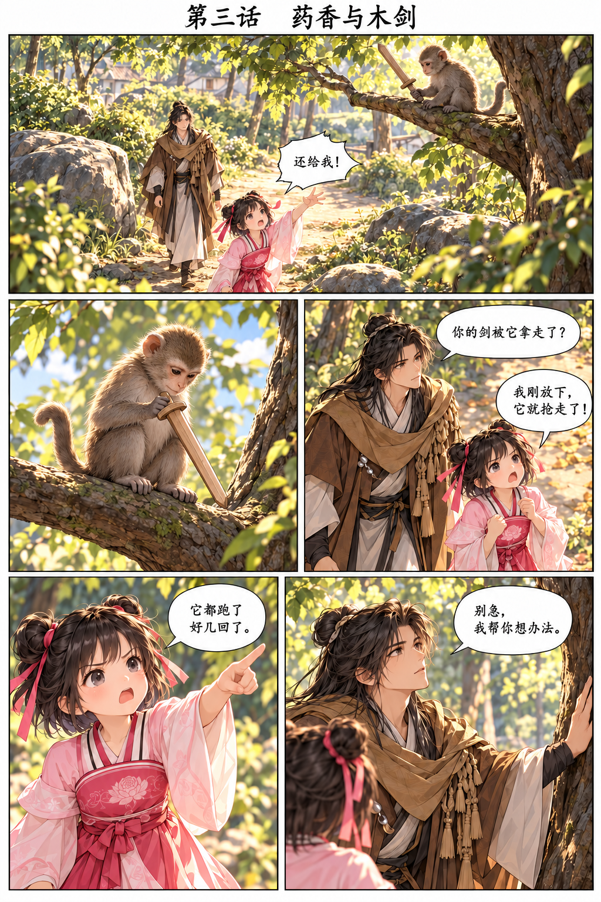
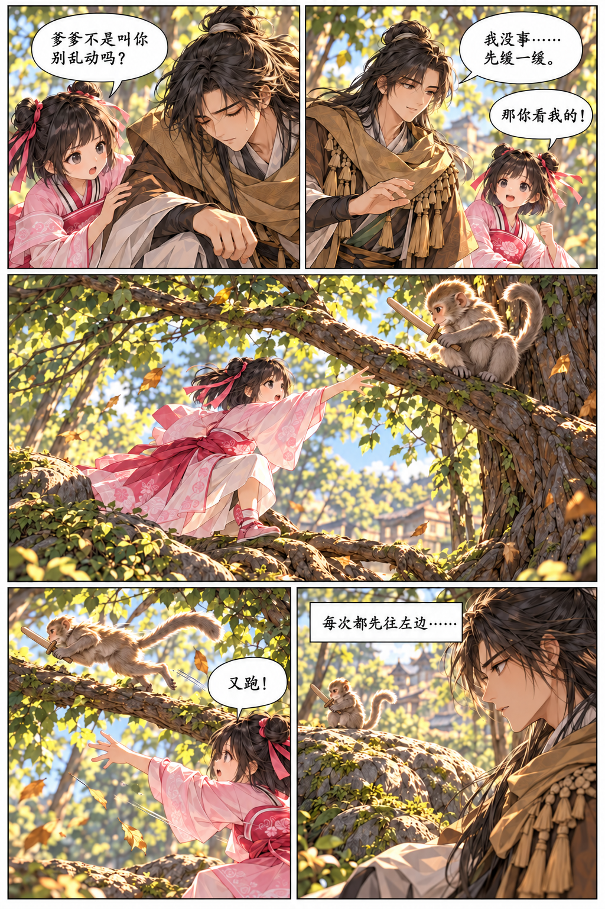
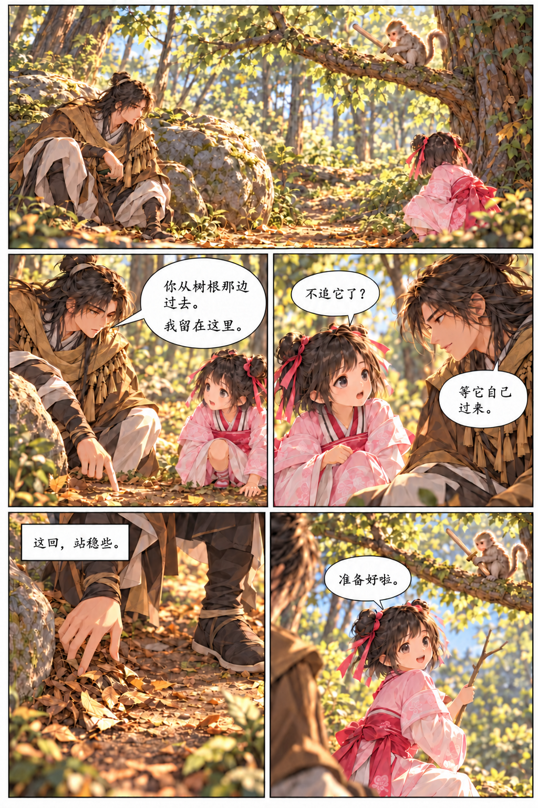
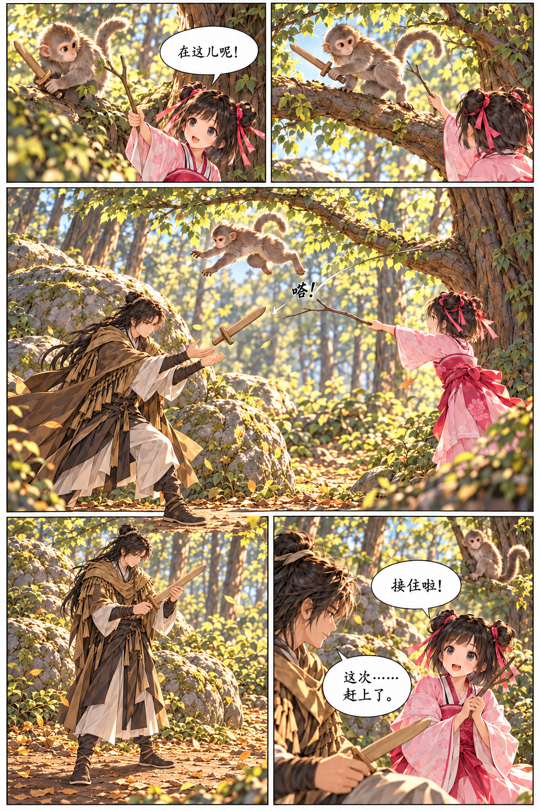
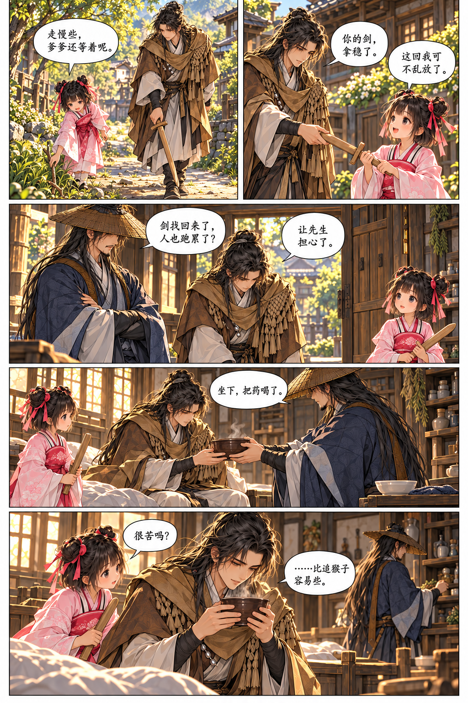

本页逐格文字
01江小彤：还给我！
02（无对白）
03宇文逸：你的剑被它拿走了？
江小彤：我刚放下，它就抢走了！
04江小彤：它都跑了好几回了。
05宇文逸：别急，我帮你想办法。

本页逐格文字
01宇文逸：它要往那边跳。
02（无对白）
03（无对白）
04拟声：沙——
05江小彤：你慢一点！
宇文逸：……还是慢了半步。

本页逐格文字
01江小彤：爹爹不是叫你别乱动吗？
02宇文逸：我没事……先缓一缓。
江小彤：那你看我的！
03（无对白）
04江小彤：又跑！
05宇文逸：每次都先往左边……

本页逐格文字
01（无对白）
02宇文逸：你从树根那边过去。
宇文逸：我留在这里。
03江小彤：不追它了？
宇文逸：等它自己过来。
04宇文逸：这回，站稳些。
05江小彤：准备好啦。

本页逐格文字
01江小彤：在这儿呢！
02（无对白）
03拟声：嗒！
04（无对白）
05江小彤：接住啦！
宇文逸：这次……赶上了。

本页逐格文字
01江小彤：走慢些，爹爹还等着呢。
02宇文逸：你的剑，拿稳了。
江小彤：这回我可不乱放了。
03江吟风：剑找回来了，人也跑累了？
宇文逸：让先生担心了。
04江吟风：坐下，把药喝了。
05江小彤：很苦吗？
宇文逸：……比追猴子容易些。